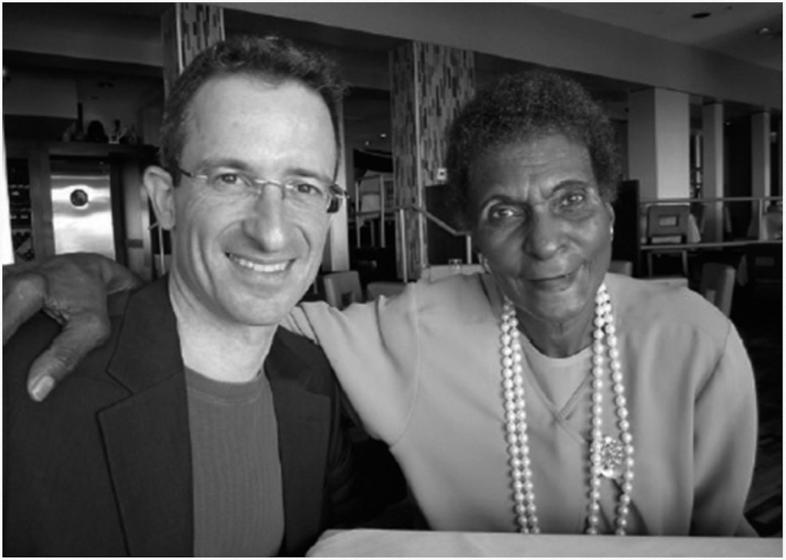

SEASON 1 EPISODE 1
我的18岁
之前一失落 没有了方向 坠落于深渊 自我无法得到解脱 感受到了人生的虚无 人生的意义到底在哪里 我活着是为了什么 我到底想干嘛 一系列烦恼 呼之欲出
突然想到 复读的高考第一天考试 数学前的那个场景
我坐在行李箱上 面对着寝室里的镜子 看着我自己
想的是 这一天之后 我不会再出现在这里了
我会成为什么样子
我满脸期待和彷徨 我的人生即将发生巨变
确实 我找到了自己的方向
我的人生应该
热烈而繁荣
突然想到 复读的高考第一天考试 数学前的那个场景
我坐在行李箱上 面对着寝室里的镜子 看着我自己
想的是 这一天之后 我不会再出现在这里了
我会成为什么样子
我满脸期待和彷徨 我的人生即将发生巨变
确实 我找到了自己的方向
我的人生应该
热烈而繁荣
2024
SEASON 1 EPISODE 2
启 点
我只是个意外
本应该出生的是那个女孩——"她"、
由于医疗事故，医院误诊我妈患了癌，对她执行了化疗
那天，她剃光了头发，而她的父母甚至不来看她，剩我奶奶照顾我妈
我妈从来没有和我讲过，都是我奶奶给我讲的
她是我在这个世界上见过的最漂亮的人
你看 我妈笑得老灿烂了
我已经很久没有让我妈开心了
能否把你比作夏日璀璨，你却比夏日更可爱温存。
狂风摧残八月花蕊娇妍，夏日匆匆离去毫不停留。
苍天明眸有时过于灼热，金色面容往往蒙上阴翳。
一切优美形象不免褪色，偶然摧折抑或自然老去。
而你如仲夏繁茂不凋零，秀雅风姿将永远地翩翩。
死神无法逼你气息奄奄，你将永生存于不朽诗篇。
只要我一直呼吸眼不盲，这诗和美人将千古流芳。
致世界上最漂亮的人
本应该出生的是那个女孩——"她"、
由于医疗事故，医院误诊我妈患了癌，对她执行了化疗
那天，她剃光了头发，而她的父母甚至不来看她，剩我奶奶照顾我妈
我妈从来没有和我讲过，都是我奶奶给我讲的
她是我在这个世界上见过的最漂亮的人
你看 我妈笑得老灿烂了
我已经很久没有让我妈开心了
能否把你比作夏日璀璨，你却比夏日更可爱温存。
狂风摧残八月花蕊娇妍，夏日匆匆离去毫不停留。
苍天明眸有时过于灼热，金色面容往往蒙上阴翳。
一切优美形象不免褪色，偶然摧折抑或自然老去。
而你如仲夏繁茂不凋零，秀雅风姿将永远地翩翩。
死神无法逼你气息奄奄，你将永生存于不朽诗篇。
只要我一直呼吸眼不盲，这诗和美人将千古流芳。
致世界上最漂亮的人
2024
SEASON 1 EPISODE 3
曾 叔
我经常喊他曾ber，他特别宠我，每次一看到我都会给我买零食吃，他特别喜欢打牌。当别人说我不聪明的时候，他说头上包多的才聪明，他是在夸我，我意识到了原来我没别人说的那么笨。
但是坏消息是他患了糖尿病，最后一次见面是他躺在病床上，我们全家人去看他，他骨瘦如材，我不敢进去，我怕进去了之后会哭，他会因为我哭而伤心。他是我唯一一个亲眼在我身边离去的"亲人"，我超级喜欢他。
高考完暑假的某一天，梦见他了，他说："你要努力读书，等你哪天挣到大钱了，带两斤白酒，放在我的坟前，我想闻一下味道。"他还说了一句："你想像我这样吗？"
之后的每一天跑步，他都在我身边陪着我。没有他的影子，我会坚持不下去，每次我都会跟他讲话，他都会鼓励我。
不管你能不能看到，我永远会说："曾叔，我爱你。"
那壶白酒，等我奉陪。
我永远会记得你，我永远会爱你。
但是坏消息是他患了糖尿病，最后一次见面是他躺在病床上，我们全家人去看他，他骨瘦如材，我不敢进去，我怕进去了之后会哭，他会因为我哭而伤心。他是我唯一一个亲眼在我身边离去的"亲人"，我超级喜欢他。
高考完暑假的某一天，梦见他了，他说："你要努力读书，等你哪天挣到大钱了，带两斤白酒，放在我的坟前，我想闻一下味道。"他还说了一句："你想像我这样吗？"
之后的每一天跑步，他都在我身边陪着我。没有他的影子，我会坚持不下去，每次我都会跟他讲话，他都会鼓励我。
不管你能不能看到，我永远会说："曾叔，我爱你。"
那壶白酒，等我奉陪。
我永远会记得你，我永远会爱你。
2024
SEASON 1 EPISODE 4
张 鹏
我的人生导师：张鹏，他是第一次我见过的最让我佩服的人。
他说："面对任何事，只要我想，那么任何事都不能阻挡我去做，我只是看看我能做到什么程度，仅此而已。"
"请你和自己做有效的比较"
我只是想看看我自己能做到什么程度，仅此而已。这一切的价值都关于我，我来决定意义，我为自己承担责任。它没有标准，没有捷径，没有比较，只是我想去做，发自内心的去做。
这是我无法逃避的真理。
他说："面对任何事，只要我想，那么任何事都不能阻挡我去做，我只是看看我能做到什么程度，仅此而已。"
"请你和自己做有效的比较"
我只是想看看我自己能做到什么程度，仅此而已。这一切的价值都关于我，我来决定意义，我为自己承担责任。它没有标准，没有捷径，没有比较，只是我想去做，发自内心的去做。
这是我无法逃避的真理。
2024
SEASON 1 EPISODE 5
死 不 旋 踵
当车行驶到一个漆黑的空间时，我拿出纸上写好的一句话，对着手机拍下了它。
这仿佛就是在绝望中逢生，一边想到我的境地，一边是这句话：
"赴汤蹈刃，死不旋踵，以自苦为极。"—张鹏
"赴汤蹈刃，死不旋踵，以自苦为极。"—张鹏
2024
SEASON 1 EPISODE 6
自 救
请你务必，一而再，再而三，三而不竭，千次万次，毫不犹豫地救自己于这世间水火。
2024
SEASON 1 EPISODE 7
送你一朵水仙花
锻炼 睡眠 感恩 积极 平衡 坚持 耐心 努力 勤奋 放大 正念 日记 进步 触摸 拥抱 诚实 自尊 卓越
—《我的白酒》
2024
SEASON 1 EPISODE 8
世界在我面前，缓缓展开
记住什么？避免什么？但是，你并不孤独。还有其他人的管道，能够给你能量管道不断向前发展。
你与世界不断链接。至此，它最终发展成了世界的神经网络因为有我们，有你们，你才能不断的螺旋式上升。
2024
SEASON 1 EPISODE 9
希望可以再大胆一点
想到《你想活出怎样的人生》的这句话："心中有了温暖美好的思绪后，
就将其付诸行动，事后也会觉得，'当时这么做了，真好'"。
让我们带着这份勇气和温暖，继续前行，在人生的道路上留下更多美好的印记。
2024
SEASON 1 EPISODE 10
做最好的自己
很喜欢这些优秀女性说过的话：
董卿："我从不后悔对任何一个人好，哪怕是看错了人，哪怕是被辜负，哪怕是撞了南墙，
因为我对你好，不代表你有多好，只是因为我很好。"
陈敏："不要为了别人开心而随意改变自己，因为你没有责任让别人快乐。"
附议：殊途同归，随着生命的展开，你要不断的体验现实。那些不开心的时刻，没有享受人生的时刻，
不会给任何人带来任何好处。别人不会因为你不幸福而变得更加幸福。我选择做自己，做最好的自己，
我要用最积极的方式去诠释自己经历的一切。
2024
SEASON 1 EPISODE 11
你认真的样子真的超帅
我的可控在我之内
结果我不能控制
但我愿意去做那些有价值的事
我并不期待什么 只是珍惜 热爱 欣赏
我不急于证明什么 我的实力始终向上
所有的急躁 终将无用
坦然以待 用心感受
它是我能够掌控的
心在跳 眼有神 气不破
划过日日夜夜 数不清的挣扎犹豫猜忌怀疑 终会烟消云散
做不完的题目终将报废 跑不完的步 会继续跑下去
那些错过的人 终将渐行渐远
勇气 坦诚 锻炼 安心 放大 积极 感恩 正念 睡眠
这壶白酒始终伴我前行
好似一股清流 给了我无穷的力量
我说过我会活得帅一点
这一年我进化了：
状态不好，跑了三十圈的操场
放下执念，选择了应该做的事
勇敢面对，对我来说重要的事
始终热情，对生活中可控的情
一直单纯，自然而然地做自己
扔掉急躁，不再急于证明什么
坦然以待，心中始终一片汪洋
在劫难逃，沉浸美好活在当下
甘地说：欲变世界，先变其身
我做到了
我感觉自己的力量被无限放大了
这力量化为一股洪流 始终流淌在我心里
这不灭的魂 认真的样子真的超帅
2024
SEASON 1 EPISODE 12
金刚柱
底层迎合不适合我
天平该上上重量了
2024
SEASON 1 EPISODE 13
尽全力成为自己
想要看到世界上，最好的
请让世界看到你最好的一面。
2021
SEASON 1 EPISODE 14
李 笑 来
一生的榜样
2024

SEASON 1 EPISODE 15
T a l
没有他，我不会坚持跑步，他说跑步就算有副作用那都是好的。
他说过一句最让我印象深刻的话："勇气就是当你面对恐惧的时候，仍然继续向前。"
他说过一句最让我印象深刻的话："勇气就是当你面对恐惧的时候，仍然继续向前。"
2024
Investment Portfolio
 Bitcoin
Bitcoin
 Ethereum
Ethereum